从传统 RFM 到多维 RFI 的升级：不只关注用户「花了多少」，更要看清用户「想不想买、为什么没买」。
本项目基于 1000 名用户 的电商行为数据，构建了一套改良版的 RFM-RFI 用户价值分层模型。
传统 RFM（Recency / Frequency / Monetary）模型只看历史消费，忽略了「逛」与「互动」的行为信号。本项目在其基础上创新性地引入 意向度（Satisfaction）、转化摩擦系数（Friction）、活跃忠诚度（Loyalty）、购买力背景（Income Level）、兴趣匹配度（Interest Match） 五维指标，将用户细分为 15 类精细化画像，并通过对「传统 RFM 策略」与「优化 RFI 策略」的 ROI 边际测算，验证了改良模型在预算效率和投入产出比上的显著优势。
| 对比维度 | 传统 RFM 策略 | 优化 RFI 策略 |
|---|---|---|
| 目标用户数 | 200 人 | 159 人 |
| 实际成本 | 2,000 元 | 1,590 元 |
| 预算使用率 | 20.0% | 15.9% |
| 边际收益（增量） | 2,081 元 | 2,123 元 |
| 边际 ROI | 4.0% | 33.5% |
✅ 优化 RFI 策略在边际收益基本持平的前提下，仅用 15.9% 的预算就实现了 33.5% 的边际 ROI，单位预算的投入产出效率是传统 RFM 的 8 倍以上（33.5% / 4.0% ≈ 8.4 倍）。
| 字段分类 | 字段名称 | 说明 |
|---|---|---|
| 基本信息（是谁） | User_ID, Age, Gender, Location, Income, Interests | 用户 ID、年龄、性别、地域、收入、兴趣 |
| 行为特征（逛啥） | Last_Login_Days_Ago, Time_Spent_on_Site_Minutes, Pages_Viewed, Newsletter_Subscription | 距上次登录天数、网站停留时长、浏览页数、是否订阅邮件 |
| 消费特征（花啥） | Purchase_Frequency, Average_Order_Value, Total_Spending, Product_Category_Preference | 购买频率、平均订单价值、总消费金额、品类偏好 |
Unnamed: 0，实际特征 14 列），经 drop_duplicates 检查无重复值、info() 检查无缺失值describe() 描述统计检查无异常值| 字段 | 均值 | 中位数 | 最小值 | 最大值 | 众数 |
|---|---|---|---|---|---|
| Age | 40.99 | 42 | 18 | 64 | 43 |
| Income | 81,305 | 81,042 | 20,155 | 149,951 | 35,379 |
| Last_Login_Days_Ago | 15.59 | 16 | 1 | 29 | 8 |
| Purchase_Frequency | 4.63 | 5 | 0 | 9 | 5 |
| Average_Order_Value | 104.04 | 105 | 10 | 199 | 83 |
| Total_Spending | 2,552.96 | 2,542 | 112 | 4,999 | 1,047 |
| Time_Spent_on_Site_Minutes | 297.36 | 292.5 | 2 | 599 | 417 |
| Pages_Viewed | 24.40 | 24.5 | 1 | 49 | 29 |
| 字段 | 分布 |
|---|---|
| Gender | Male 526（52.6%），Female 474（47.4%）——性别均衡 |
| Location | Suburban 349（34.9%），Urban 344（34.4%），Rural 307（30.7%） |
| Interests | Sports 213，Fashion 209，Travel 196，Food 196，Technology 186 |
| Product_Category_Preference | Apparel 218，Electronics 209，Books 198，Home & Kitchen 189，Health & Beauty 186 |
数据加载与预处理
│
▼
第一阶段 用户属性分析（是谁）
│ ① 性别 ② 年龄 ③ 年龄×消费 ④ 地域 ⑤ 兴趣×品类偏好
▼
第二阶段 用户活跃度分析（逛啥）
│ ① 活跃度分布 ② 订阅 vs 非订阅 ③ 浏览与购买相关性
▼
第三阶段 改良 RFM → RFI 指标构建（五维新指标）
│ ① 意向度 ② 摩擦系数 ③ 忠诚度 ④ 收入层级 ⑤ 兴趣匹配
▼
第四阶段 RFM-Satisfaction 综合评分 + 用户分层画像（15 类）
│
▼
第五阶段 ROI 边际测算（传统 RFM vs 优化 RFI）
│
▼
第六阶段 业务结论与运营策略
pd.read_csv() 读取 user_personalized_features.csvdf.shape 确认规模（1000, 15）；df.info() 确认各字段非空、类型正确df.drop_duplicates() 删除重复记录df.describe() 结合众数，确认 Age、Income、消费与行为字段均处于合理区间value_counts() 检查性别、地域、兴趣、品类偏好四类字段的取值分布是否合理（见上表）男女比例接近 1:1（Male 526 / Female 474），用户群体性别均衡、无偏差。
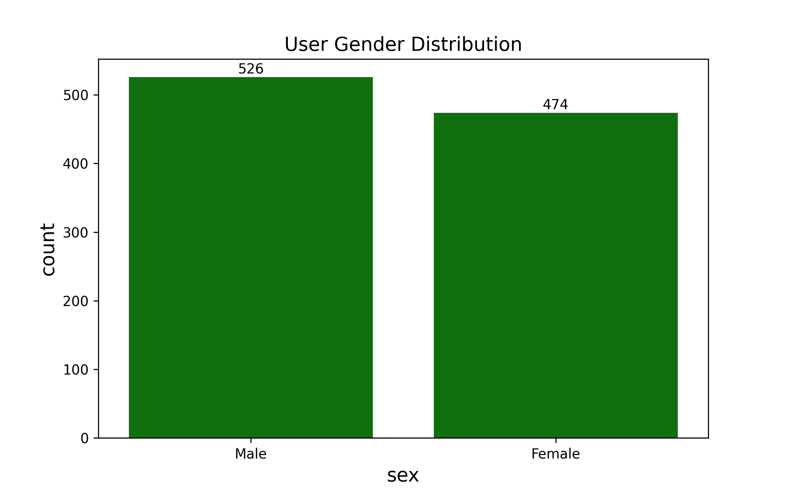
按人生阶段（毕业→结婚→养娃→退休）对年龄分箱：
| 年龄段 | 用户数 | 占比 |
|---|---|---|
| 18 岁以下 | 25 | 2.5% |
| 18-25 岁 | 152 | 15.2% |
| 26-35 岁 | 212 | 21.2% |
| 36-45 岁 | 211 | 21.1% |
| 46-55 岁 | 223 | 22.3% |
| 55 岁以上 | 177 | 17.7% |
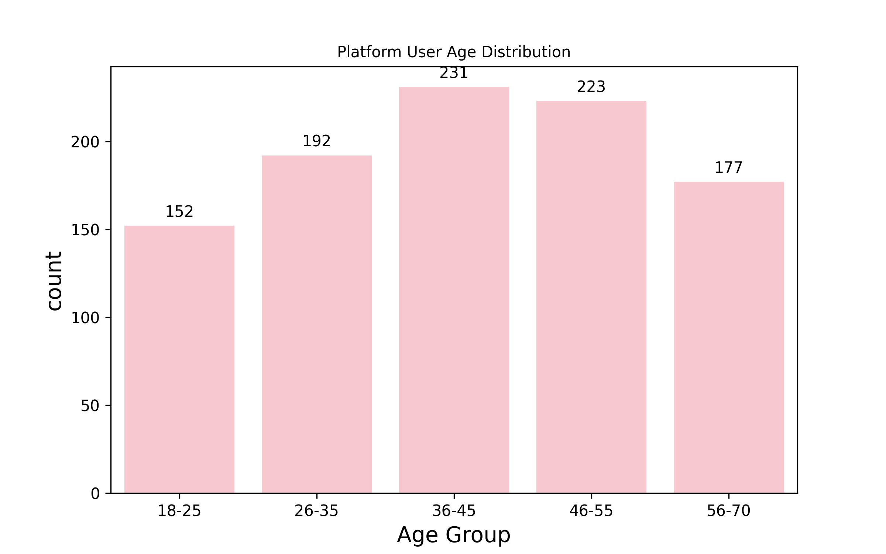
对各年龄段的 Total_Spending 聚合（sum / mean / count）：
| 年龄段 | 人均消费 | 总消费 |
|---|---|---|
| 18 岁以下 | 2,462 元 | 61,540 |
| 18-25 岁 | 2,518 元 | 382,739 |
| 26-35 岁 | 2,504 元 | 530,788 |
| 36-45 岁 | 2,550 元 | 538,146 |
| 46-55 岁 | 2,596 元 | 579,002 |
| 55 岁以上 | 2,603 元 | 460,742 |
各年龄段消费水平接近（约 2500-2600 元），其中 55 岁以上用户人均消费最高（2603 元），其次为 46-55 岁（2596 元）——中老年群体消费能力不容忽视。
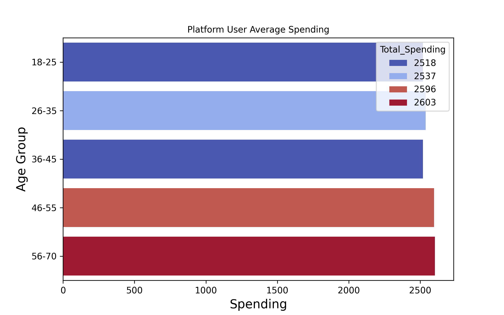
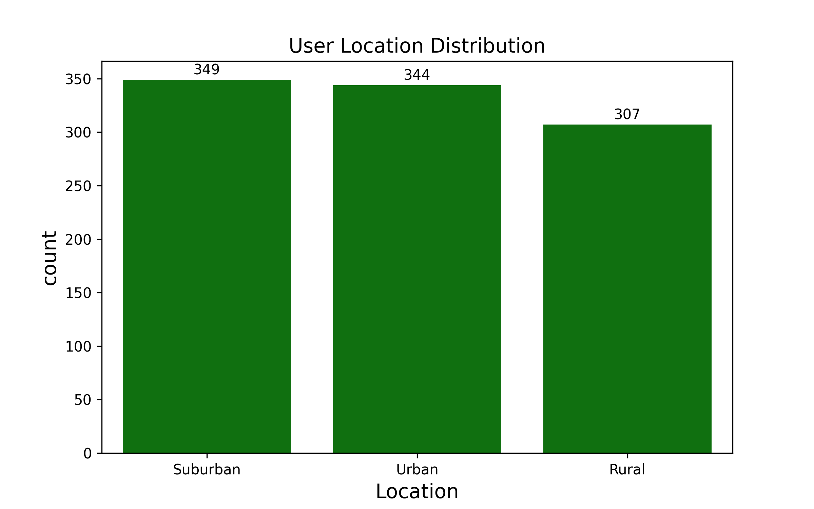
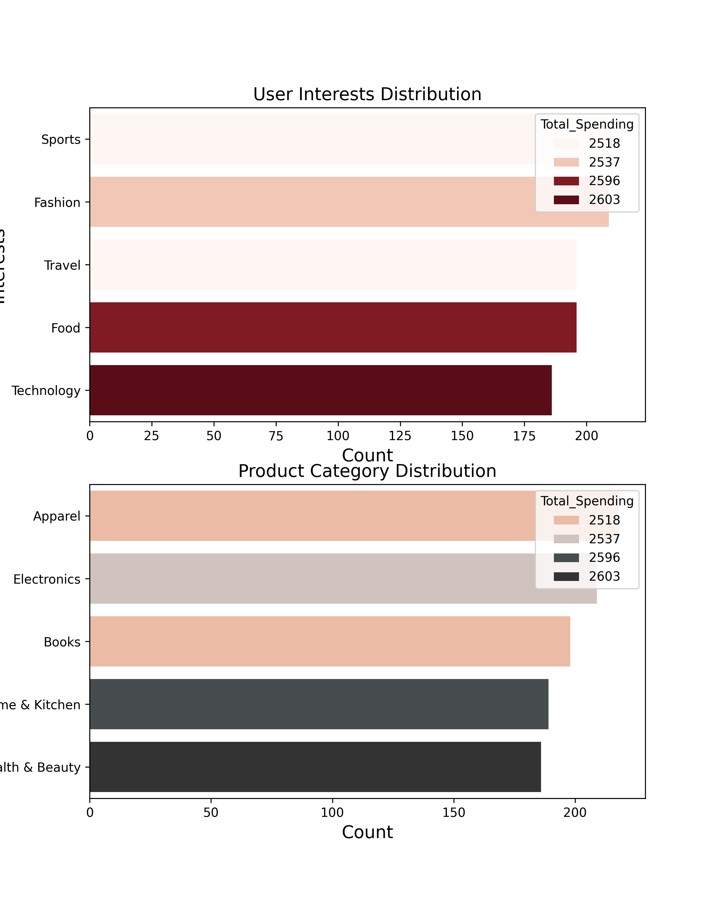
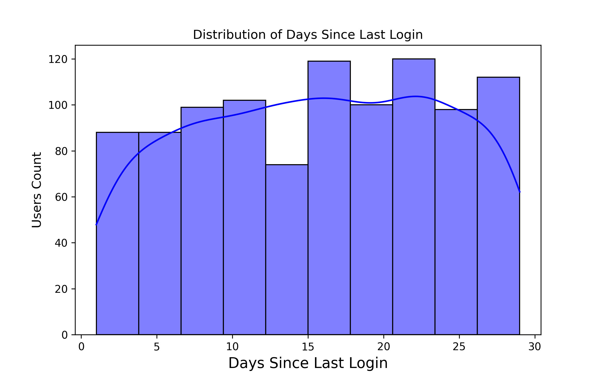
💡 分层运营策略：
- 0-10 天低活跃用户 → 新手引导 / 专属福利，提升登录频率
- 15-22 天核心用户 → 推送召回
- 25 天以上用户 → 流失召回（优惠券 + 个性化推荐）
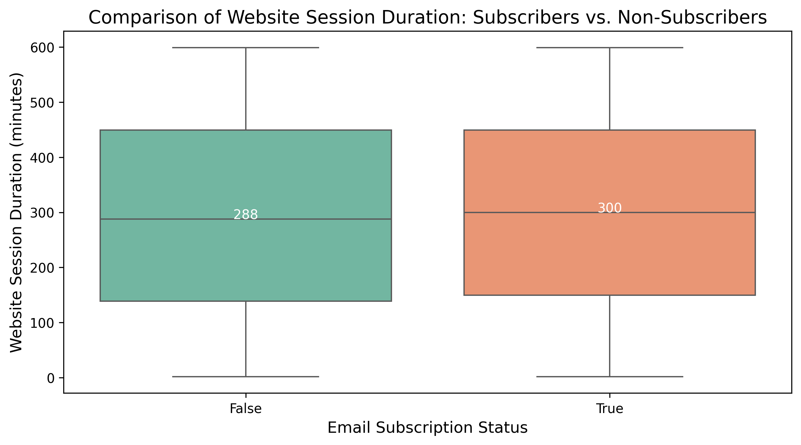
🔍 结论：当前邮件订阅对「增加停留时长」的贡献有限，需优化邮件内容策略或重新评估该渠道价值。
| 指标对 | 相关系数 |
|---|---|
| 浏览时长 vs 购买频次 | -0.028 |
| 浏览页数 vs 购买频次 | 0.026 |
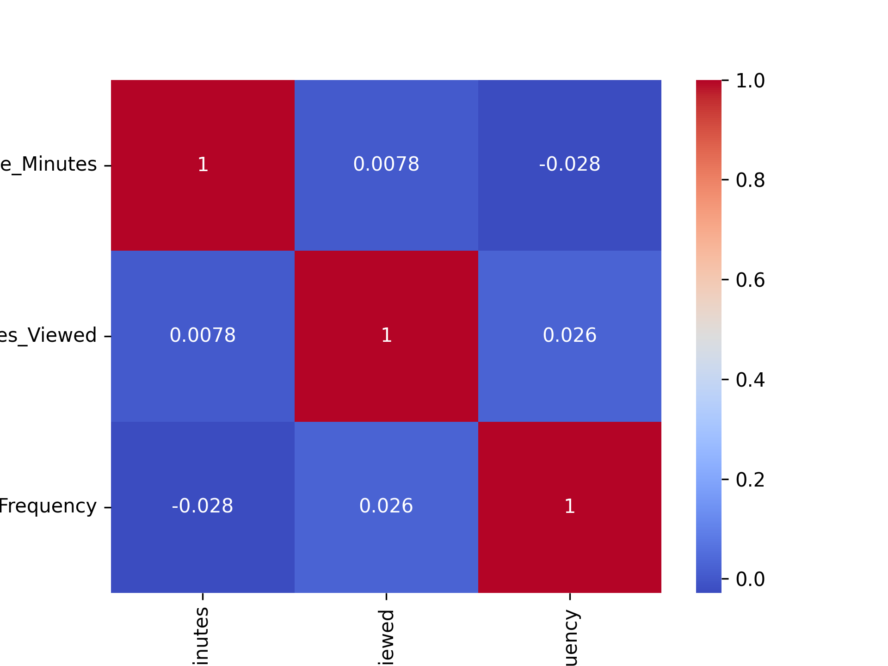
🔍 关键发现：浏览时长、浏览页数与购买频次的相关性均趋近于零，说明存在大量 「观光用户」——贡献了流量和活跃度，但未贡献 GMV。他们浏览意愿强但转化尚未被触发，是等待转化的核心潜力池。
传统 RFM 只看 花钱（R=最近登录、F=购买频率、M=消费金额），三个指标组合得到 8 类用户（从最值钱到最不值钱），但看不到「逛」和「互动」。
| 新增指标 | 公式 / 逻辑 | 业务含义 |
|---|---|---|
| 意向度 (Satisfaction) | 停留时长归一化得分 × 0.5 + 浏览页数归一化得分 × 0.5 | 用户是否有购买意愿 |
| 转化摩擦系数 (Friction) | 浏览页数 / (购买次数 + 1)（+1 防分母为零） | 看了很多但买得很少 = 很纠结 |
| 活跃忠诚度 (Loyalty) | 订阅状态 × 最近登录天数 → 1/2/3 分 | 区分真忠诚 vs 假忠诚 |
| 购买力层级 (Income Level) | 收入 33% / 66% 分位数 → Low/Medium/High | 有钱不花（高潜）vs 没钱不花（正常） |
| 兴趣匹配度 (Interest Match) | 兴趣标签 == 购买品类偏好（0/1） | 推荐是否精准 |
| 指标 | 结果 |
|---|---|
| Satisfaction | 范围 [0.00, 98.83] |
| Friction | 范围 [0.10, 49.00] |
| Loyalty_Score | {1: 824, 2: 77, 3: 99} |
| Income_Level | Low 334 / Medium 332 / High 334 |
| Interest_Match 匹配率 | 0.0%（兴趣与购买品类完全错位，推荐亟待优化） |
💡 Loyalty 打分逻辑：订阅且 7 天内登录 = 3 分；未订阅但 7 天内登录 = 2 分；其余（超 7 天未登录）= 1 分。
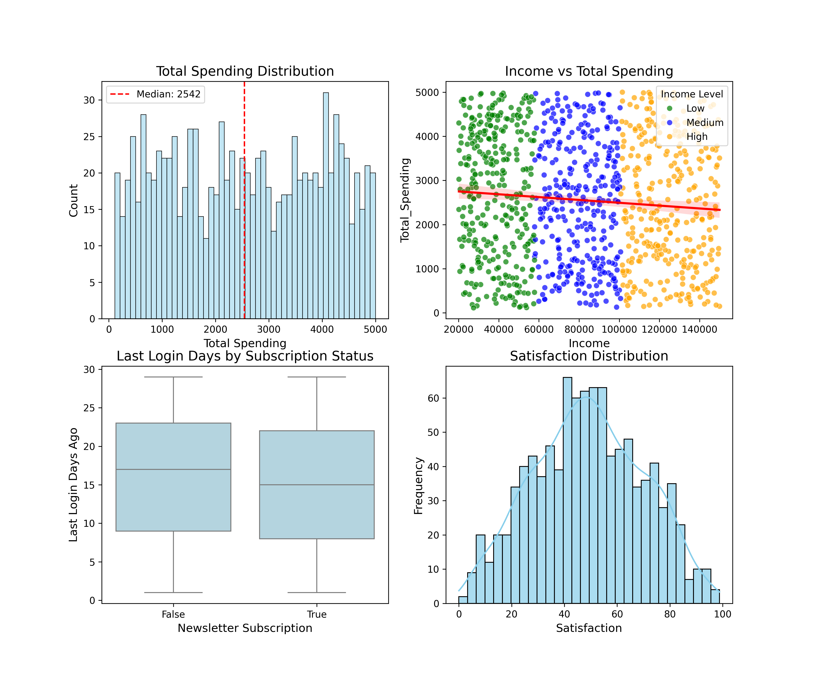
上图为 2×2 组合图：
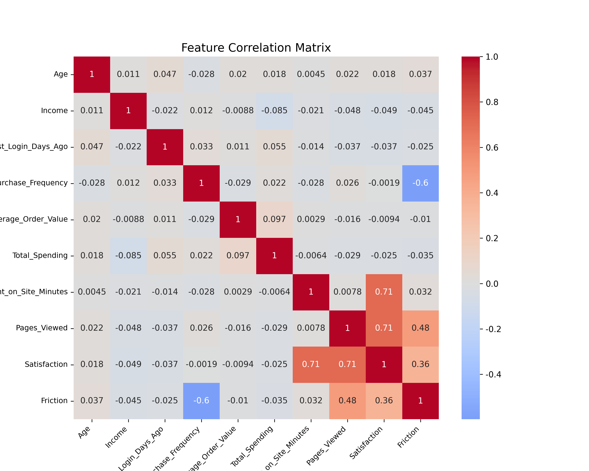
特征相关性矩阵（10 维数值特征）显示：Income 与 Total_Spending 正相关较强，而行为指标（时长、页数）与消费指标相关性弱，印证了「观光用户」的存在。
# 归一化：任意列缩放到 0-100（所有值相同则给 50 分防分母为零）
R_Score = Min-Max归一化(Last_Login_Days_Ago, 反向) # 最近登录越近分越高
F_Score = Min-Max归一化(Purchase_Frequency)
M_Score = Min-Max归一化(Total_Spending)
# 传统 RFM 加权评分
RFM_Score = 0.2×R_Score + 0.3×F_Score + 0.5×M_Score
# 引入意向度作为放大系数
I_Weight = Satisfaction / 500 # 将满意度缩放到 0~0.2
Final_Score = RFM_Score × (1 + I_Weight)
| 评分 | 范围 |
|---|---|
| R_Score / F_Score / M_Score | [0, 100] |
| RFM_Score | [4.72, 96.77] |
| Final_Score | [5.26, 105.06] |
┌─────────────────────────────────────────────┐
│ 传统RFM三指标(R/F/M)初分类 │
│ 重要价值 / 重要发展 / 重要保持 / 重要挽留 │
│ 一般发展 / 一般维持 / 一般 / 低值 │
└─────────────────┬───────────────────────────┘
│
┌──────────────┼──────────────┐
▼ ▼ ▼
┌──────────┐ ┌──────────┐ ┌──────────┐
│ 意向度S │ │ 收入层级 │ │ 摩擦系数 │
└────┬─────┘ └────┬─────┘ └────┬─────┘
│ │ │
└──────────────┼──────────────┘
▼
┌─────────────────────────┐
│ 修正为15类精细标签 │
│ 核心VIP/纠结土豪/高潜沉睡 │
│ 隐形活跃/犹豫潜力/... │
└─────────────────────────┘
| 优先判断条件 | 修正标签 |
|---|---|
| Low-Value/General Maintenance 且 High 收入 且 S>60 | High-Potential Sleeping Users（高潜沉睡） |
| High 收入 且 S>70 且 F<40 且 M<50 | High-Spending Hesitant Users（纠结土豪） |
| General Maintenance/Development 且 S>80 且高摩擦 | Potential Hesitant Users（犹豫潜力） |
| Low 收入 且 S>70 且 F<40 | Invisible Active Users（隐形活跃） |
| High 收入 且 R<40 且 M>50 | High-Potential At-Risk Users（高潜流失客） |
| M>70 且 F>70 且 S>60 | Core VIP Users（核心 VIP） |
| Low 收入 且 S<40 且 M<40 | Penny Pinchers / Low-Value（羊毛党/低值） |
| 用户分层 | 用户数 | 占比 | 平均消费 | 平均购买频次 | 平均意向分 | 平均综合分 |
|---|---|---|---|---|---|---|
| General Users | 443 | 44.3% | 2368 | 5.17 | 48.80 | 54.31 |
| General Development Users | 80 | 8.0% | 1126 | 6.45 | 50.05 | 52.88 |
| Important Win-Back Users | 67 | 6.7% | 4134 | 2.57 | 46.53 | 58.59 |
| High-Potential At-Risk Users | 64 | 6.4% | 3991 | 4.92 | 44.09 | 65.40 |
| Low-Value Users | 50 | 5.0% | 1037 | 1.68 | 42.79 | 20.87 |
| Important Development Users | 48 | 4.8% | 3874 | 1.62 | 48.91 | 65.41 |
| General Maintenance Users | 47 | 4.7% | 1055 | 1.47 | 45.83 | 33.57 |
| Important Value Users | 47 | 4.7% | 3960 | 7.47 | 42.28 | 86.82 |
| Important Retention Users | 39 | 3.9% | 4030 | 7.49 | 48.00 | 75.26 |
| Invisible Active Users | 34 | 3.4% | 2757 | 1.32 | 77.99 | 47.28 |
| Penny Pinchers / Low-Value Users | 33 | 3.3% | 1003 | 5.48 | 23.37 | 37.02 |
| Core VIP Users | 23 | 2.3% | 4171 | 8.17 | 71.09 | 88.86 |
| High-Potential Sleeping Users | 12 | 1.2% | 1318 | 1.75 | 74.34 | 35.20 |
| Potential Hesitant Users | 7 | 0.7% | 739 | 2.43 | 90.23 | 34.69 |
| High-Spending Hesitant Users | 6 | 0.6% | 1157 | 1.67 | 78.86 | 30.24 |
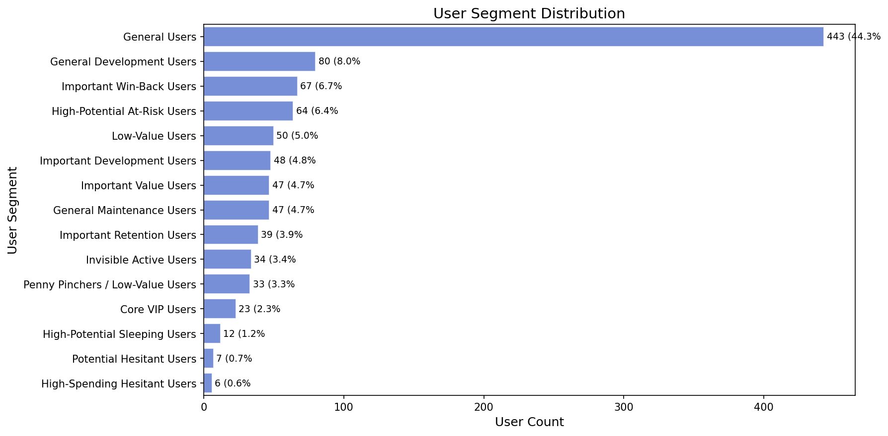
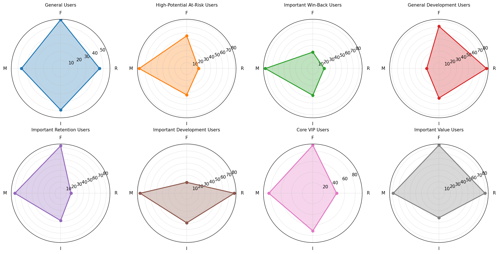
关键发现：
增量收益 = 目标用户数 × 边际转化提升 × 平均客单价（AOV）
边际 ROI = (增量收益 - 优惠券成本) / 优惠券成本 × 100%
成本 = 目标用户数 × 单张优惠券成本
边际增量法只关注「发券带来的额外转化」，而非混淆自然转化，避免高估 ROI。
| 假设项 | 传统 RFM 策略（方案A） | 优化 RFI 策略（方案B） |
|---|---|---|
| 目标用户 | RFM 前 20%（200 人） | 核心 70 + 潜力 89（159 人） |
| 自然转化率 | 20% | 核心 25% / 潜力 1% |
| 发券后转化率 | 30% | 核心 30% / 潜力 20% |
| 边际提升 | 10% | 核心 5% / 潜力 19% |
| 平均客单价 | 104 元 | 104 元 |
| 总预算 | 10,000 元 | 10,000 元 |
| 优惠券成本 | 10 元/人 | 10 元/人 |
目标人群定义：
- 核心用户 = Core VIP Users + Important Value Users（23 + 47 = 70 人）
- 潜力用户 = 纠结土豪 + 高潜沉睡 + 犹豫潜力 + 高潜流失客（6 + 12 + 7 + 64 = 89 人）
- 预算分配：80% 预算优先给核心用户，剩余预算给潜力用户
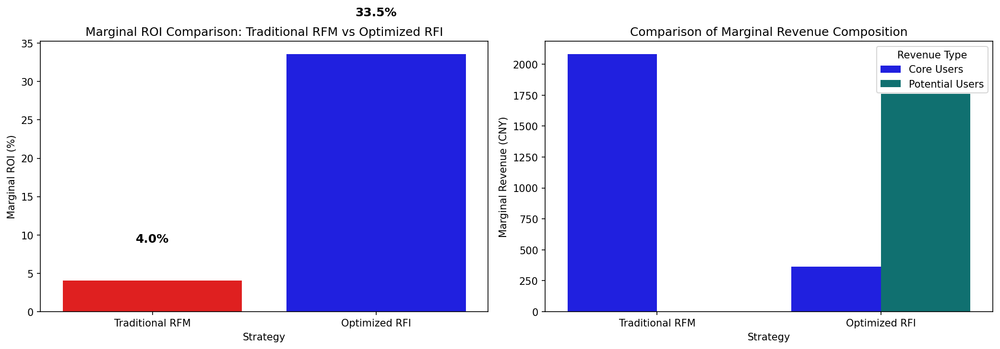
| 指标 | 传统 RFM（方案A） | 优化 RFI（方案B） |
|---|---|---|
| 目标用户数 | 200 人 | 159 人（核心 70 + 潜力 89） |
| 实际成本 | 2,000 元 | 1,590 元 |
| 预算使用率 | 20.0% | 15.9% |
| 增量收益 | 2,081 元 | 2,123 元 |
| 边际 ROI | 4.0% | 33.5% |
🎯 优化 RFI 策略在边际收益基本持平（2123 vs 2081 元）的前提下，仅用 15.9% 的预算就实现了 33.5% 的边际 ROI，远高于传统 RFM 的 4.0%。在预算有限场景下，这一策略更具实操价值。
本项目遵循 「业务理解优先于特征堆砌」 的建模原则：
- 特征分类遵循业务逻辑（属性（是谁）→ 行为（逛啥）→ 消费（花啥）），而非盲目入模
- 购买力（Income）等背景信息作为 分层标签 而非评分因子，保持评分体系的因果纯净性
- ROI 测算采用 边际增量法，关注「发券带来的额外转化」，而非混淆自然转化
- 模型的最终目标是 可落地的运营策略，而非仅追求数学精度